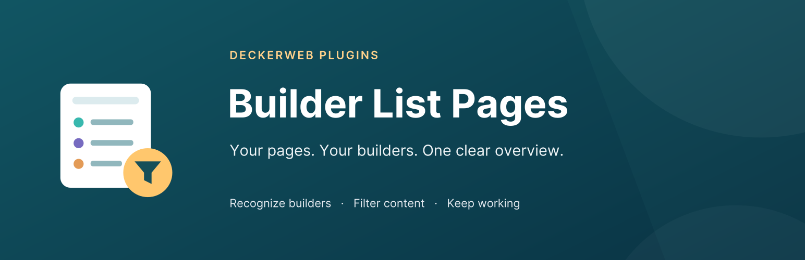
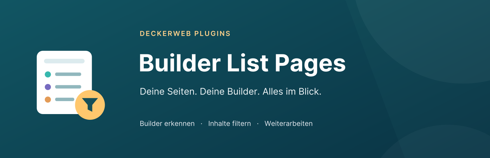

Builder List Pages

Your pages. Your builders. One clear overview.
English · FAQ by topic · Changelog

Deine Seiten. Deine Builder. Alles im Blick.

Your pages. Your builders. One clear overview.
English · FAQ by topic · Changelog

Deine Seiten. Deine Builder. Alles im Blick.